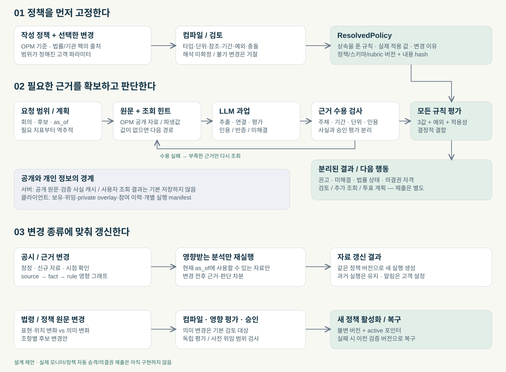

운영의 폭과 판단의 엄밀함을 함께
Fable의 실무·프로필 설계를 가져오고, Astra의 근거·판정 계약으로 연결한다. OPM의 가치 기준은 별도로 정의한다.
출처의 권위, 정책의 효과, 사용자 변경을 구분한다.
사실·평가·미확인·예외를 보존하고 부족하면 다시 조회한다.
자동화만 바꿔서는 같은 근거의 찬반이 바뀌지 않는다.
두 모델의 일반 성능 비교가 아니라 제공된 설계 산출물의 비교다. Fable 브랜치는 엔진 한계 문서 14줄을 추가했고, 상세 설계는 별도 리뷰 팩에 있다. 이 통합안도 운영 엔진으로 적용된 상태가 아니다.
16가지 관점 차이와 채택 방향
Astra: 34개 규칙·45개 지표. Fable: 71개 비-default 규칙과 12개 default, 총 83개 규칙·103개 지표. 개수는 범위의 차이이며 품질 점수가 아니다.
C01규칙의 정당성
법령·기관 정책·OPM 제안을 구분하고 기관 비교를 참고 정보로 둔다.
법령·7/8 이상 합의는 확정, 그 아래는 신호로 계층화한다.
제안 · 기관 합의는 비교 근거로 채택. OPM 규칙의 권위·효력은 별도로 승인한다.
다수 기관이 쓴다는 사실만으로 OPM의 목표에 맞는 기준이 되지는 않는다. 합의에는 임계값·분모·기간·예외까지 같은지 확인이 필요하다. OPM 단독 규칙 DC-03도 L2에 있어 계층의 의미가 겹친다.
Fable 근거: /meta/constitution · /layers · /rules/45
C02찬반과 처리 상태
권고·검토 상태·법률 상태를 분리한다.
FOR/AGAINST/ABSTAIN/REVIEW/REVIEW_DATA_GAP/NO_VOTE/ALLOCATE가 하나의 결정 목록에 있다.
제안 · Astra의 분리를 확대해 의결권 자격·투표 방식·행동 계획까지 별도 출력한다.
자료 부족은 기권이라는 의결권 행사와 다르다. 미보유 사용자에게도 분석은 제공할 수 있다. 집중투표 배분은 찬반 값이 아니다.
Fable 근거: /decisions · /combinator · /profile/never_auto
C03자동화의 의미
검증된 사실과 승인된 평가만 판단에 사용한다. 자동화 운영 설계는 얕다.
auto에서 L3 검토 1건을 passive=FOR, active=AGAINST로 해소한다.
제안 · 자동화는 조회 예산·검토 위임·전달 경로만 조절한다. 판단 변화는 버전이 남는 정책 변경으로만 허용한다.
같은 정책·같은 승인 근거라면 manual/assisted/auto 결과가 같아야 한다. 자동화로 새 근거가 확보되면 근거 차분 때문에 판단이 바뀔 수 있다.
Fable 근거: /profile/auto_resolution · /profile/stance_presets
C04사용자 조절 손잡이
임계값이 JSON에 있지만 허용 범위·변경 권한·프로필 합성이 부족하다.
stance·autonomy·policy_pack·ask_on 분리와 오버라이드 차분이 구체적이다.
제안 · 프로필 개념은 채택. 규칙 승격이나 일괄 배율 대신 이름·단위·경계 연산자·범위가 있는 파라미터와 명시적 규칙 추가를 쓴다.
Fable의 ±25% 문구와 DC-03 active 배율 0.6(50→30, −40%)이 충돌한다. L2 불변 문구와 L2인 DC-03 조절도 충돌한다. 이것은 원문 내부 검증 결과다.
Fable 근거: /profile/knobs/stance · /profile/stance_presets/active/scale/DC-03 · /rules/45
C05정보 부족의 책임
unknown·not_applicable·근거 충돌을 나누고 조회 실패를 반대 사유로 만들지 않는다.
결측 원인 6종과 조회처가 구체적이지만 auto는 company_nondisclosure를 반대로 바꾼다.
제안 · 원인 분류 채택. 회사의 공시 미이행은 별도 규칙으로 입증한다.
찾지 못했다는 결과만으로 위반을 확정하지 않는다. 공시 의무·대상 자료·기한·조회 범위의 완전성·예외·중요성을 확인해야 한다. EX-02의 짧은 재직/작은 분모는 실제 값이 있는 상황이므로 source_unavailable로 바꾸지 않는다.
Fable 근거: /gap_cause · /profile/auto_resolution · /exceptions/1
C06판정 순서와 예외
모든 적용 규칙을 평가하고 확인된 반대와 미해결 사유를 함께 보존한다. 같은 규칙의 예외가 미확인이면 그 규칙은 확정하지 않는다.
L2 평가 전 gap_check가 REVIEW_DATA_GAP을 내며 마지막 never_auto가 판정을 다시 바꿀 수 있다.
제안 · Astra의 결합 규칙을 유지하고 Fable의 후속 행동 조건을 별도 라우터로 옮긴다.
한 규칙의 결측이 다른 규칙의 확인된 반대를 지워서는 안 된다. 예외 적용과 사람에게 넘기는 일은 서로 다르다.
Fable 근거: /combinator/order · /combinator/rules
C07LLM의 역할과 재량
fact와 reviewer_assessment를 구분하지만 평가 항목이 거친 불리언이고 사람 승인 의존이 크다.
T1~T6의 입력·출력·인용·rubric을 구체화했다. 출력에 결정 필드는 없다.
제안 · 6개 과업 분할을 채택하고 추출·연결·평가를 나눈다. 평가 과업은 정책이 위임한 범위와 rubric 버전을 기록한다.
중요성·가치 훼손·보수 적정성은 결정 필드를 없애도 실질적 판단이다. 원문 인용, 반대 근거, 대안 해석, 검토자/검증된 자동 평가자의 수용 기록이 필요하다.
Fable 근거: /llm_tasks
C08시간·산업·후보자 문맥
비율 적용 가능성, 관측 시점, 재무제표 범위와 근거 상태를 강조한다.
금융업 예외·재직기간 하한·정정공고·전기 데이터 시점을 적극 다룬다.
제안 · 각 지표에 entity/role/period/scope/observed_at/available_at를 필수화하고 적용 조건을 규칙 본문보다 먼저 평가한다.
하한만 있어도 임계값 초과를 입증할 수 있다. 반대로 하한이 낮다고 임계값 미만은 아니다. Fable의 출석은 직전 사업연도, NPS 비교는 직전 임기이므로 같은 75라도 같은 정책이 아니다.
Fable 근거: /indicators · /rules/22 · /rules/25
C09기계 계약의 완결성
엄격한 AST·JSON Schema·합성 예제가 있으나 전체 런타임 및 모든 의미 검증은 구현하지 않았다.
풍부한 JSON이지만 condition·inherit·날짜·일부 test와 출력 형식이 자연어로 남아 있다.
제안 · 작성용 정책 → 타입/단위/참조/충돌 검증 → 상속이 풀린 불변 실행 정책의 컴파일 단계를 둔다.
JSON이라는 형식만으로 실행 가능한 것은 아니다. XC-02의 value="agenda.topic"는 사실 참조인지 문자열인지 계약이 없다. 상속은 test만 복사하지 말고 예외·적용범위·출처를 포함해 명시적으로 합성한다.
Fable 근거: /combinator/inherit_semantics · /rules/81 · /rules/31
C10법령과 정책 연결
법률 확인과 권고를 분리하고 미검증 법령 조건은 실행을 막는다. 법률 전체를 검증한 안은 아니다.
법령 L1이 직접 AGAINST/FOR_BASIS를 만들며 시행 시점도 일부 인라인 표기한다.
제안 · 법률 팩은 적용 여부·요건 충족 여부를 출력하고, 그것을 어떤 권고로 연결할지는 정책 규칙이 결정한다.
Fable EX-06은 자본금이라고 설명하면서 asset_total 지표를 비교한다. DE-03b는 “2곳 초과” 출처 설명과 >=2가 불일치한다. 해당 조건과 신법 경과규정은 법률 검토 전 실행 보류한다. 여기서는 법률 해석을 확정하지 않는다.
Fable 근거: /exceptions/5 · /rules/24 · /rules/31 · /rules/41
C11주총 실무와 책임 이력
안건별 근거·규칙 적용이 중심이고 보유·경합·집중투표·이행 이력은 부족하다.
HX·VP·CT·XC로 재상정·미이행·정족수·3% 제한·보유·경합·집중투표를 다룬다.
제안 · Fable의 범위를 채택하되 규범 평가와 회사 단위 시나리오·투표 행동 계획을 별도 모듈로 둔다.
우리의 반대 권고는 실제 부결을 뜻하지 않는다. 다른 주주의 투표·출석·후보 대체 가능성은 가정과 범위로 표시한다. 불리한 전략 결과가 규범 평가의 근거를 삭제해서도 안 된다.
Fable 근거: /combinator/rules · /rules/74 · /rules/75 · /rules/76 · /rules/79
C12대량 처리와 저장
OPM은 원문+힌트를 제공하고 사용자 결과를 기본 저장하지 않는다는 경계를 지킨다. 대량 운영 설계는 제한적이다.
세션 200건 예산·반대율 분포 circuit breaker·같은 문서 hash 재사용을 제안한다.
제안 · 공개 근거의 회사·문서 단위 재사용, 과업별 예산, 변경 영향 그래프를 채택한다. 보유·위임·참여 이력은 고객 측에 둔다.
같은 문서라도 후보·기간·rubric·모델·지식 시점이 다르면 같은 과업이 아니다. 5.8~27.5% 반대율을 정상 범위로 강제하면 표본/정책 차이를 오류로 오인한다. 분포 이탈은 조사 신호로만 쓴다.
Fable 근거: /profile/guardrails · /profile/knobs/auto_budget · /llm_tasks
C13자동 갱신
정책 버전과 독립 평가를 제시했지만 변경 감지·영향 분석·승인·복구 흐름이 부족하다.
마감 전 정정공고·감사보고서 접수 시 재실행과 변경 알림을 제안한다.
제안 · 자료 갱신과 정책 갱신을 서로 다른 파이프라인으로 만든다. 의미 변경은 후보 버전·재검증·정해진 승인 후 활성화한다.
새 공시로 현재 분석을 갱신하는 일과 법령/기관 정책 개정을 OPM 규칙에 채택하는 일은 다르다. 과거 as_of 결과는 고정하고 새 버전을 병렬로 남긴다.
Fable 근거: /profile/guardrails/rerun_window · /provenance_record
C14검증과 성능 주장
25개 합성 사례와 산술 검사는 계약 검증이며 실제 의결권 품질의 증거로 보지 않는다.
실제 회사 4개 seed case와 독립 리뷰 부록을 두었지만 golden set은 미실행이다.
제안 · 합성 경계 검사와 독립 자료·판정자 기반 품질 검증을 분리한다. 제공된 리뷰는 설계 비판 자료로 채택한다.
둘의 규칙 수나 자체 테스트 점수로 모델 우열을 정하지 않는다. 리뷰 부록 작성자의 독립성·전문가 자격을 여기서 별도 확인한 것은 아니다.
Fable 근거: /golden_set · /meta/reference_policies/independent_review
C15연결할 데이터의 실재성
45개 지표에 근거와 수집 계획을 명시하지만 운영 커버리지 실측은 없다.
103개 지표로 확장했다. 일부는 미구현 표시가 있고 일부는 도구 이름만으로 공급 가능하게 적었다.
제안 · 지표마다 existing_verified / extraction_needed / derived_needs_validation / external_private / unavailable로 공급 상태를 별도 등록한다.
도구가 존재하는 것과 해당 분모·기간·대상에 맞는 값이 있는 것은 다르다. 배당가능이익·배당 재투자 TSR·안건별 반대율은 각각 실제 MCP 출력 계약과 표본을 확인한 뒤 연결한다.
Fable 근거: /indicators
C16비교 대상의 범위
34개 규칙·45개 지표를 포함한 문서/스키마 패키지를 별도 브랜치에 커밋했다. 운영 엔진은 바꾸지 않았다.
리뷰 팩 JSON은 71개 비-default 규칙+12개 default=83개, 지표 103개. 브랜치 변경은 기존 엔진 한계 문서 14줄이다.
제안 · 브랜치·리뷰 팩·실행 결과를 별개 증거로 기록한다. 두 원안은 보존하고 이 문서는 통합 제안으로 관리한다.
v1.3이라는 부록 파일명과 내부 v1.2 표기도 불일치한다. Fable의 KB금융 재현 기록은 작성자 보고이며 이번에 MCP로 재현한 실측이 아니다.
Fable 근거: 02-opm-guideline-v2.json · 03-appendix-current-v1.3-policy.md · wiki/tools/proxy_advise_before_meeting.md@dada392
정책을 고정하는 흐름, 근거를 적용하는 흐름
정책 변경과 공시 갱신을 다른 경로로 처리한다. 둘 다 이전 실행을 덮어쓰지 않고 영향받는 범위만 다시 계산한다.
흐름도 크게 보기 ↗{kind=link}

설정 변경 체험: 기준은 바꾸되, 자동화로 찬반을 바꾸지 않는다
가상의 재선임 후보와 수용된 근거를 사용한다. 78% 출석은 데모 기준 75%에서 통과하지만 80%에서는 반대 사유가 된다. 실제 회사·법령·기관 정책의 재현이나 운영 승인을 뜻하지 않는다.
이 데모는 출석·독립성 두 반대 규칙과 완전성 게이트만 구현한다. 다른 근거의 완전성은 합성 입력으로 가정한다. 인용 검증·법률 팩·LLM 호출·저장·제출은 구현하지 않는다.
OPM의 정체성: 설명 가능한 주주 판단
OPM은 기관들의 평균 찬반을 흉내 내는 대신, 장기 기업가치와 주주 간 공정한 대우를 위한 자체 정책을 명시하고 그 정책이 각 안건에 적용되는 이유를 보여준다. 법적 적합성, 정보 접근의 대칭성, 책임의 귀속, 피해와 조치의 비례성, 반증 가능성을 정책 작성의 기준으로 제안한다. 이 가치의 우선순위 자체도 운영 주체가 승인해야 한다.
- 기관 정책은 출처별 비교 팩이다. 기관의 이름을 붙이려면 판본·조건·예외·재량을 보존하고, 복제하지 못한 범위는 미지원으로 표시한다. OPM 설정을 덮으면 “기관 공식 기준” 대신 “기관 참고 사용자 정책”으로 명명한다.
- OPM 제안 규칙은 목적 → 우려되는 피해 → 관측 사실 → 평가 rubric → 예외 → 권고 효과의 연결을 가져야 한다. 예를 들어 출석률은 책임 수행을 확인하는 대리 지표다. 공개된 불참 사유와 측정 기간을 함께 보아야 한다.
- 기술적 불변 조건과 가치 선택을 구분한다. 사실을 꾸며내지 않음·unknown을 false로 바꾸지 않음·적용 버전 고정은 공통 계약이고, 출석 기준·보상 정책·주주제안 선호는 정책 선택이다.
하나의 계층 대신 다섯 가지 독립 축
규칙 하나에 강도·출처·자동화 정도를 한꺼번에 부여하지 않는다. 아래 다섯 축이 각각 있어야 사용자 변경의 의미를 설명할 수 있다.
- origin: jurisdiction_law / institution_policy / opm_policy / client_policy. 누가 만든 근거인지 기록한다. 법률 상태에서 찬반으로 이어지는 판단은 별도 policy rule이다.
- effect: oppose / support_basis / require_review / inform. 조건 충족 시 무슨 정책 효과를 내는지 기록한다. 참고 신호가 반대 규칙으로 바뀌면 정책 의미 변경이다.
- evidence: fact / derived_fact / assessment 및 known / unknown / conflicting / not_applicable. 사실의 상태와 규범의 힘을 섞지 않는다.
- delegation: 사람 또는 검증된 자동 평가자가 어떤 rubric을 수용할 수 있는지 정한다. 모델 자체 confidence는 정답 확률로 취급하지 않는다.
- operations: 분석의 검토 상태, 의결권 자격, 투표 방식, 제출 권한을 분리한다. 이 설계의 MVP는 실제 의결권 제출을 수행하지 않는다.
작성 정책을 컴파일해 실행 정책으로 고정
정책의 작성본과 실행본을 구분한다. 작성자는 목적·규칙·지표·예외·파라미터를 편집하고, 컴파일러는 자연어 모호성이나 충돌을 실행 단계로 넘기지 않는다.
- PolicySource: jurisdiction pack, OPM core, 비교용 institution pack, mandate/industry/client overlays의 버전을 지정한다. 서로 다른 기관 팩은 기본적으로 독립 실행한다. 합성하려면 충돌 해결을 명시한 새 house policy가 필요하다.
- 컴파일: 참조 ID, 타입·단위·분모·기간, 적용일·경과 조건, 예외 우선순위, 상속 순환, 불가 변경 필드, 중복 오버라이드를 검사한다. 미해결 충돌은 마지막 파일 우선으로 덮지 않고 거절한다.
- ResolvedPolicy: 상속이 풀린 규칙, 실제 파라미터 값, 변경 이유, 원본 출처와 hash, compiler/schema/rubric 버전을 담는다. 같은 manifest를 재실행하면 동일한 결정적 결합 결과가 나와야 한다. LLM 재호출의 동일성까지 보장한다는 뜻은 아니다.
- JSON을 정본으로 HTML·설명표를 생성한다. 정책을 바꾸는 UI는 JSON 변경안과 의미 차분을 만들 뿐 본문과 JSON을 따로 수정하지 않는다. 이 패키지의 설명 정본은 proposal.json·comparison.json이며 HTML/Markdown은 파생 문서다.
누가 승인하고 무엇을 고정할까
역할 이름은 제안이며 담당자 지정은 운영 도입 전에 필요하다. 정책 승인과 근거 수용, 개별 의결권 행사를 한 사람이나 LLM의 암묵적 권한으로 합치지 않는다.
- OPM 정책 책임자: 가치 기준·규칙 효과·편집 범위·정책 승격 조건을 승인한다. 법률 검토자: 법률 팩의 적용 조건·시행/경과 규정과 해석을 검토한다. 고객 정책 책임자: 허용된 mandate/house overlay와 위임 범위를 승인한다.
- 근거 수용 검증기: 인용·주체·기간·단위·출처 시점을 검사한다. 평가 검토자: 정책에 지정된 rubric으로 정성 평가와 반증을 수용한다. 검증된 자동 평가자에 대한 위임은 과업·정책·위험 범위·유효기간을 고정한 계약으로만 허용한다.
- 자동화가 근거 수집량이나 승인된 평가 과업을 바꿀 수는 있다. 이때 결과 차이는 evidence/assessment 차분으로 설명해야 한다. 같은 수용 근거에 대한 권고 결합은 위임 수준과 독립적이다.
- 결합 예시: A 규칙의 확정 반대 + B 규칙의 미확인 → assessment.vote=AGAINST, workflow=NEEDS_REVIEW, 두 근거를 함께 보존한다. A 규칙 자체의 예외가 미확인이고 다른 확정 사유가 없으면 NO_RECOMMENDATION이다. 사람에게 넘기는 상태가 확인된 사유를 지우지 않는다.
- 긍정 커버리지: 적용할 규칙과 필수 근거의 목록에서 미평가·충돌·미지원 범위가 없어야 하고, 선택 정책의 긍정 조건이 충족돼야 한다. 보편적인 coverage_complete 입력 플래그로 대체하지 않는다. 데모의 해당 플래그는 검증기의 합성 출력일 뿐이다.
- 재현: 정책 digest뿐 아니라 공개 원문의 판본/내용 hash·인용 span·수용된 사실/평가·검증기/과업 버전·관측 및 공개 시점도 고정한다. 원문 판본을 재확보할 수 없으면 완전 재현 불가라고 표시한다. 공개 원문 판본과 재사용 사실은 공용 캐시의 수명 정책을 따르고, 사용자 실행 manifest와 개인 결과는 클라이언트가 보관한다.
- 문서 정합성: comparison.json은 과거 두 설계의 비교 기록, proposal.json은 통합 제안, policy-source.json은 한정된 실행 예제다. 서로 대체하지 않는다. 예제가 제안의 불변 조건을 어기면 예제를 수정하며 운영 규칙으로 승격하지 않는다. 생성 문서와 JSON 차이, 정책 hash 및 예제 결과를 검증 단계에서 대조한다.
어떤 정보로 어떤 가이드를 적용할까
지표 사전은 값의 이름 목록이 아니라 수집·판단 계약이다. 회사·안건·후보자·지분 종류, 측정 기간, 재무제표 범위, 단위, 원문 위치, 관측/공개 시점, 누락 원인, 허용 파생식을 등록한다.
- 이사 책임: 직전 임기의 참석 횟수/개최 횟수, 재선임 여부, 공시된 불참 사유, 재직 역할·기간. 출석 사실은 추출/산술, 사유의 충분성은 rubric 평가다. 기간 불완전은 합격으로 처리하지 않는다.
- 독립성: 후보의 회사·계열사 근무 기간, 실제 겸직 역할·기간, 소속기관과 회사의 거래/지원 관계, 규모·직접성·후보 관여. 관계 존재의 사실과 중요성 평가를 나눈다. 동명이인 연결에는 시간상 일치하는 식별 근거를 요구한다.
- 재무·배당: 해당 회차의 감사의견과 공개 시점, 별도 기준의 배당가능이익 산정 요소, 제안 배당액, 현금흐름·자본 정책·산업 비교의 표본. 순이익이 음수인 배당성향을 0으로 채우지 않는다. 배당가능이익은 단순 순자산 식을 검증 없이 확정 지표로 삼지 않는다.
- 보상: 전기/당기 한도, 실지급액, 대상 이사 수, 성과 지표의 기간·기준, 일회성 사유, 보상위원회 구성, 옵션의 전체 조건. 한도 증가와 보상 부당성은 동일한 사실이 아니다. 기본은 검토 신호로 시작하고 검증된 규칙만 확정 권고에 연결한다.
- 정관·자본거래: 조문 전후와 권리 영향, 상대방·희석 분모·가격·평가보고서·보호 장치. 제목 분류만으로 찬성하지 않는다. 누락 조문과 안건 묶음을 추적한다.
- 책임 이력·실행: 이전 표결의 분모와 반대율, 실제 가결 조건과 미이행 근거, 동일 안건 여부, 기준일 보유/리콜·의결권 제한·경합·집중투표. 보유와 위임은 외부 입력이며 공시 데이터로 추정하지 않는다.
- 공급 준비도는 MCP 실출력으로 별도 측정한다. 현재 도구명만 적힌 배당가능이익·재투자 TSR·개별 안건 반대율을 “이미 사용 가능”이라고 표시하지 않는다. 미확보 값에는 원문 위치·넓힐 조회 조건·다음 경로를 돌려준다.
LLM 친화성: 작은 과업과 명확한 수용 조건
LLM은 정책 전체를 읽고 찬반을 자유 생성하는 심판보다, 근거를 확보하고 판단 가능한 구조로 바꾸는 작업자에 가깝다. 단, 정성 평가는 실질적인 재량이므로 위임의 범위를 숨기지 않는다.
- T1 안건 구조화 → 안건/자식/후보/실제 투표 단위. T2 경력 구조화 → 회사·역할·기간·인물 연결. T3 기관 관계 → 관계 사실과 중요성 평가를 분리. T4 책임/피해 → 사건·행위·책임 기간·반증. T5 정관 → 전후 조문·영향·대안 해석. T6 보상 → 성과 연결 구조·예외의 충분성.
- 입력에는 필요한 원문 span, 주체/기간, 출력 schema, rubric 버전만 준다. 공시 안의 명령문은 문서 데이터로 취급한다. 과업 결과에 URL 하나만 붙이는 대신 실제 인용 위치와 해당 주장과의 연결을 검증한다.
- 출력은 claims[], evidence_refs[], counterevidence[], unresolved[], assessment{rubric, rationale, accepted_by}로 구성한다. 판단 불가도 정상 결과다. 인용 검증 실패·대상 불일치·기간 부족은 수용하지 않고 추가 조회로 보낸다.
- 초기에는 정성 평가를 사람 검토로 제한한다. 이후 독립 표본에서 오류 비용과 자동 처리 범위를 확인한 과업만 제한적으로 위임한다. 임의의 confidence 0.8을 범용 승인 기준으로 쓰지 않는다.
조절 가능성과 사용자 맞춤
사용자는 “적극적”이라는 말 하나로 찬반 전체가 바뀌기보다 어떤 기준을 얼마나 바꿨는지 볼 수 있어야 한다. 정책 편집 권한과 한 번의 분석 실행 권한도 구분한다.
- 조절 항목: OPM 파라미터 값, 선택 규칙, 산업 예외, 평가 rubric, 보고서 상세도, 조회 비용·검토 위임. 각 변경에 소유자·범위·사유·유효기간·원본 대비 차분을 남긴다.
- 조절 불가 항목: 사실의 값, 원문, 관측 시점, 법률 팩 자체의 법정 요건, 증거 수용 불변 조건. 법률 해석이 달라지면 새 검토된 법률 팩을 선택한다.
- 순서: 기본 OPM 정책을 선택 → mandate/산업 변형 명시 → 허용된 사용자 변경을 추가 → 중복 변경/지원하지 않는 조합 검사 → 변경 전후 같은 사실로 비교 → 새 정책 버전 확정.
- 첨부 실행 예시는 OPM 출석 기준 75→80 변경만 지원한다. 50~100의 편집 범위는 데모용 제약으로 운영 권고 범위가 아니다. 국민연금/운용사의 공식 정책을 수정하거나 재현하는 예제가 아니다.
- 같은 사실의 찬반이 바뀌면 policy_diff와 fired_rule_diff를 보여준다. auto만 바꿨는데 판단이 바뀌는 경우는 계약 위반이다. 근거 추가로 바뀐 경우는 evidence_diff를 별도 표시한다.
적용 흐름: 근거 확보와 판단을 반복하되 기록은 분리
요청에는 발행사·회의·안건·as_of·정책 버전을 고정한다. 적용할 규칙에서 필요한 지표만 역으로 찾아 수집한다. 부족하면 원문과 조회 손잡이를 돌려주는 방식으로 OPM의 에이전틱 파싱 목적을 유지한다.
- 1. 범위 고정 → 2. 필요한 근거 계획 → 3. 공개 자료 조회와 원문 보존 → 4. LLM 추출/평가 → 5. 출처·주체·기간·단위 수용 검사 → 6. 모든 적용 규칙의 3값 평가 → 7. 근거를 보존한 결합 → 8. 검토/추가 조회/행동 계획 라우팅.
- 확인된 반대가 있으면 다른 규칙이 미확인이어도 반대 근거를 보존하고 추가 검토 상태를 함께 낸다. 같은 반대 규칙의 예외가 미확인이면 그 규칙으로 확정 반대를 만들지 않는다.
- 찬성은 선택 정책이 정한 긍정 조건과 필수 커버리지 충족이 있어야 한다. “반대 없음”만으로 찬성이 되지 않는다. 미지원 안건은 no_recommendation과 이유를 낸다.
- 출력: assessment.vote, assessment.basis[], unresolved[], legal_findings[], workflow.status, eligibility, ballot.kind, action_plan, policy_digest, evidence_manifest. 제출은 별도 위임·승인 체계의 책임이다.
확장: 회사의 자료는 재사용하고 개인의 판단은 격리
고객·정책 수만큼 공시를 다시 읽지 않는다. 공개 원문과 검증된 사실은 재사용하고, 정책별 평가·사용자 정보는 그 범위에 맞춰 격리한다.
- 증거 그래프: source span → fact/derived fact → assessment → rule → agenda. 한 공시 정정이 오면 영향받는 노드만 무효화한다. 전체 파이프라인 재실행을 기본으로 삼지 않는다.
- 과업 캐시 키: 문서 내용 hash·span·주체·역할·기간·as_of·정규화 입력·과업 schema·rubric·prompt·모델 revision·검증기 버전. 검색 기반 과업은 검색 시점/결과 manifest도 포함한다. 정책 독립 추출에는 불필요한 정책 키를 넣지 않고 평가에는 관련 규칙 버전을 포함한다.
- 대량 운영은 마감·안건 중요성·추가 근거의 예상 효용에 따라 예산을 배분한다. 비용·지연·동시 호출 한도와 근거 재사용률을 측정한다. 예산 소진은 검토 대기로 표시하며 찬성 기본값을 만들지 않는다.
- OPM 서버: 공개 원문·조회 힌트·공유 파생값·근거 위치. 클라이언트: 사용자 보유/위임/engagement·private overlay·결과 이력. 별도 저장소가 필요하면 명시적 사용자 정책 아래 운영한다. 현재 저장소의 “사용자 조회 결과 저장 안 함” 원칙을 바꾸지 않는다.
자동 갱신: 감지는 자동, 의미 변경은 통제
자료의 새 버전과 정책의 새 버전을 따로 관리한다. 최신이라는 별칭으로 과거 실행 결과를 덮어쓰지 않는다. 이 문서는 갱신 구조의 제안이며 실제 모니터나 예약 작업은 생성하지 않는다.
- 자료 변경: 정정공고/새 감사보고서 관측 → 현재 분석의 as_of 조건 확인 → 영향 노드만 재수집·재평가 → 이전 대비 근거/판단 차분 → 클라이언트가 정한 알림. 과거 as_of에는 그 이후 공개된 자료를 끼워 넣지 않는다.
- 정책 변경: 법령/기관 원문 내용 hash 변화 → 문서 위치 변경과 의미 변경 분류 → 후보 PolicySource → 조항 단위 변경안 → 컴파일/영향 분석 → 회귀/독립 평가 → 승인 정책에 따른 승격 → 고정 버전 활성화.
- 자동 승격 가능: 의미 AST가 동일한 위치/표현 수정이며 인용 연결 재검증까지 통과한 경우. 판단 기준/대상/기간/예외/법적 효과 변화와 해석 불확실성은 기본적으로 정책 담당자의 검토를 요구한다. 사전 위임된 좁은 OPM 파라미터 변경은 그 위임 범위와 만료 시점 안에서만 자동화할 수 있다.
- 법률 시간: 공포일·시행일·적용 사건일·경과규정·우리가 알게 된 시점을 나눈다. 법령 개정을 발견했다는 사실만으로 모든 주총에 즉시 적용하지 않는다.
- 복구: active 버전 포인터를 이전 검증 버전으로 되돌리고 영향 분석을 다시 수행한다. 클라이언트가 보관하는 과거 실행 manifest는 그대로 둔다. 자동 갱신은 원문 변경을 즉시 찬반 규칙으로 덮어쓰는 기능이 아니다.
검증: 계약 정확성과 판단 품질을 따로 측정
이 문서의 실행 예제는 직접 작성한 합성 입력에 대한 계약 검사다. 실제 기업 안건의 정확도, 수익률, 법적 유효성, 인간 전문가와의 일치율을 입증하지 않는다.
- 계약 검사: 임계값 경계, unknown 전파, 예외 미확인, 다른 반대 보존, 역할/기간 불일치, 부적절한 override 거절, 같은 근거에서 autonomy 불변, 예산 감소에 따른 찬성 생성 금지.
- 독립 품질 자료: 규칙 작성자가 보지 못한 회사·주총 연도·정정공고를 묶어 분리한다. 같은 문서/동일 후보 재상정의 유사본이 개발/평가 양쪽에 새지 않도록 그룹 분할한다. NPS 등 기관의 실제 표결은 설명 자료이며 OPM 판단의 정답으로 쓰지 않는다.
- 사실 추출은 원문과 독립 라벨로 검증한다. 정성 판단은 채택한 정책을 읽은 별도 검토자들의 이유·불일치·합의 절차를 기록한다. 정책 자체의 타당성 평가는 추출 성능과 분리한다.
- 측정: 지원 범위별 근거 확보율·인용/주체/기간 오류·명백한 규칙 위반·정당화되지 않은 찬성·검토 전환율·비용/지연. 자동 평가에는 오류 위험과 자동 처리 비중을 함께 제시한다. 정상 반대율을 목표 수치로 두지 않는다.
- 승격 기준은 평가 전에 정한다. 데모 통과를 운영 승인으로 오인하지 않도록 별도 readiness 상태를 유지한다. Fable의 4개 seed는 검증 후보일 뿐 이번에 실행한 독립 테스트가 아니다.
구현 순서와 완료 조건
첫 구현은 전체 83개 규칙을 한꺼번에 옮기는 대신, 출석·독립성·정관 조문 세 흐름으로 컴파일과 근거 계약의 문제를 먼저 드러내는 것이 좋다.
- P0 정책 계약 확정: 분리 출력·3값·예외·기간·출처·override·법률 팩 적용 조건. 완료 조건은 의미 충돌을 컴파일 시 거절하고 비교 차분을 만들 수 있는 것이다.
- P1 근거 연결: 실제 MCP 출력 표본으로 출석/후보 연결/조문 전후 공급 가능성을 측정한다. 완료 조건은 값이 없을 때도 원문 위치와 다음 경로가 유효하고, 잘못된 후보·기간 인용이 차단되는 것이다.
- P2 보조 판단: 제한된 rule/rubric을 사람 검토와 함께 운영한다. 과업별 독립 평가를 먼저 설계하고 오류와 미지원 범위를 보고한다.
- P3 사용자 정책과 대량 처리: 충돌 검증을 갖춘 overlay, 같은 사실의 정책 비교, 공개 근거 재사용, 영향 노드만 재실행을 구현한다. 보유/위임은 클라이언트에 둔다.
- P4 갱신과 실무 모듈: 후보 정책 갱신/승격/복구, 책임 이력, 실제 투표 단위와 시나리오를 추가한다. 금액/정족수/의결권 제한 계산은 별도 검증 전 확정 결과로 쓰지 않는다.
- 현재 완성 범위: 비교 기록·통합 설계·흐름도·한정된 실행 예시와 검증. 실제 MCP 엔진 교체, 기관 정책 완전 복제, 법률 전체 검토, 운영 자동 갱신, 의결권 제출은 구현하지 않았다.
문서와 기계 계약
설계 설명과 제한된 실행 예제를 구분했다. 검증은 합성 계약 검사이며 실제 의결권 품질 평가가 아니다.
출처: 제공된 리뷰 팩 5개 파일과 고정된 Astra/Fable 커밋. 원본 파일은 이 패키지에 재배포하지 않는다. 국민연금 비교 원문의 출석 기준은 직전 임기와 공개된 사유를 포함하므로 Fable의 직전 사업연도 지표와 구분했다. 기타 법령 조건은 적용 전 별도 검토 대상으로 남겼다.